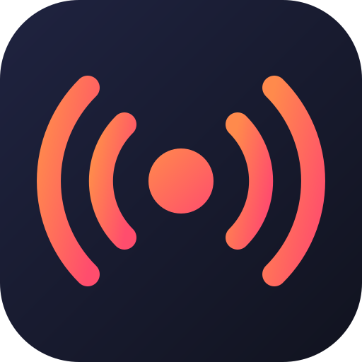

Run many 24/7 live streams on your own server and manage them from a simple desktop app for Windows, macOS, and Linux. Streams keep running even when the app is closed.
Videos, stream keys, and tokens stay on a server you own. No cloud service in between, no tracking.
Streams are sent without re-encoding, so a small 1 vCPU / 1 GB server can run ten streams at once.
Enter your server address and SSH password; the app installs and connects the Worker through a secure SSH tunnel.
Start now, once, daily, weekly, or with cron, in your own time zone, with automatic recovery.